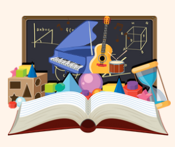

Área: Educación Artística (Música) Curso:3º Primaria

Título de la SdA: Festival Digital de Artistas Andaluces
Área: Educación Artística (Música)
Nivel: 3.º de Educación Primaria
Temporalización: 5 sesiones
Producto final: Creación y exposición de una presentación digital sobre un artista andaluz mediante Canva, acompañada de una pequeña interpretación musical, rítmica o corporal.
Justificación
Esta Situación de Aprendizaje pretende acercar al alumnado al patrimonio musical y cultural andaluz mediante una metodología activa, participativa y digital. A través de la investigación, el trabajo cooperativo y la creación de contenidos digitales, el alumnado conocerá artistas andaluces relevantes y desarrollará competencias artísticas, digitales y comunicativas.
Objetivos
- Conocer artistas representativos de Andalucía.
- Valorar el patrimonio cultural andaluz.
- Utilizar herramientas digitales para crear contenidos.
- Desarrollar habilidades de trabajo cooperativo.
- Expresarse mediante la música, el ritmo y el lenguaje oral.
- Utilizar las tecnologías de forma segura y responsable.
Metodología
La propuesta se basa en el Aprendizaje Basado en Proyectos (ABP), fomentando la investigación, la creatividad y el trabajo cooperativo.
Se utilizarán metodologías activas como:
- Aprendizaje cooperativo.
- Aprendizaje basado en proyectos.
-Aprendizaje por descubrimiento.
- Uso de herramientas digitales.
- Exposición oral de aprendizajes.
🌟 PRINCIPIOS DUA (Diseño Universal para el Aprendizaje)
1. Proporcionar múltiples formas de implicación
Actividades motivadoras relacionadas con la música y la cultura andaluza.
Trabajo cooperativo y participación activa.
Elección de diferentes formas de participación dentro del grupo.
Refuerzo positivo y valoración del esfuerzo.
2. Proporcionar múltiples formas de representación
Uso de textos adaptados.
Imágenes e infografías.
Audiciones musicales.
Vídeos educativos.
Presentaciones visuales.
Recursos digitales accesibles.
3. Proporcionar múltiples formas de acción y expresión
- Exposición oral.
- Creación de presentaciones digitales.
- Interpretación musical.
- Expresión corporal y rítmica.
- Producciones individuales y grupales.
🤝 Atención a la diversidad
Para garantizar la participación de todo el alumnado se adoptarán las siguientes medidas:
- Uso de apoyos visuales.
- Instrucciones claras y secuenciadas.
- Agrupamientos flexibles.
- Diferentes niveles de ayuda.
- Adaptación de tareas según las necesidades del alumnado.
- Recursos digitales accesibles.
- Acompañamiento del docente durante el proceso.
🎯 Criterios de evaluación
CE.2.13
Reconocer y valorar manifestaciones artísticas y musicales del patrimonio cultural andaluz.
CE.2.14
Participar activamente en producciones artísticas individuales y grupales mostrando interés, creatividad y respeto.
CE.2.16
Interpretar propuestas musicales sencillas utilizando la voz, el cuerpo o instrumentos.
CE.2.17
Utilizar herramientas digitales de forma responsable para crear producciones artísticas.
📝 Relación entre tareas y criterios de evaluación
Tarea Criterio de evaluación
Escucha y análisis de canciones andaluzas CE.2.13
Investigación sobre artistas andaluces CE.2.13
Trabajo cooperativo CE.2.14
Creación de presentación digital en Canva CE.2.17
Exposición oral del trabajo CE.2.14
Interpretación musical o corporal CE.2.16
Participación en el Festival Digital CE.2.14 y CE.2.16
📊 Instrumentos de evaluación
Rúbrica
Evalúa:
- CE.2.13
- CE.2.14
- CE.2.16
- CE.2.17
Lista de cotejo
Evalúa:
- Participación.
- Trabajo cooperativo.
- Uso responsable de herramientas digitales.
- Interpretación musical.
Diana de autoevaluación
Permite al alumnado reflexionar sobre:
- Su participación.
- Su esfuerzo.
- Su aprendizaje.
- Su trabajo en equipo.
- Su uso de las herramientas digitales.
💻 Herramientas digitales utilizadas
- Canva.
- Padlet.
- Symbaloo.
- eXeLearning.
- Pizarra Digital Interactiva.